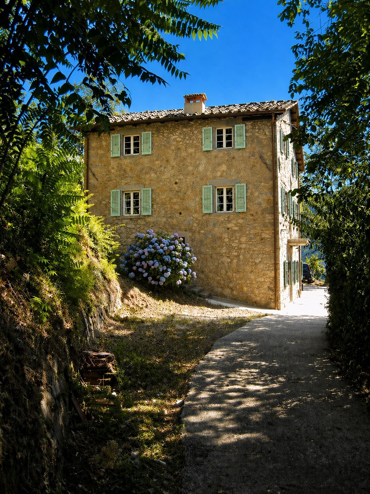
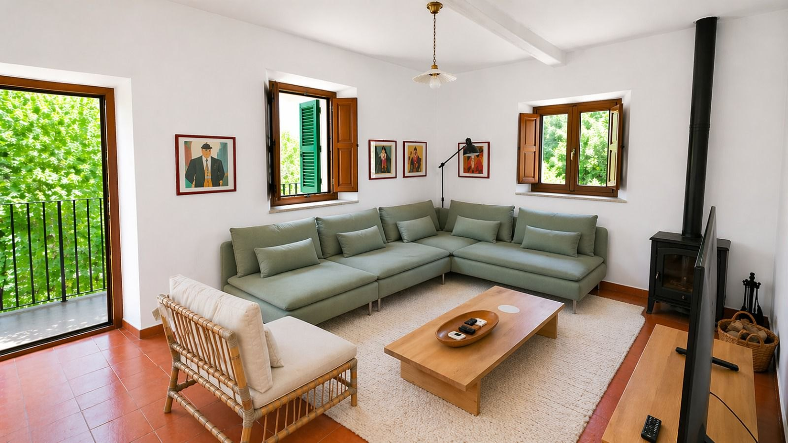

Infinity pool
Privé zwembad met uitzicht over de Apuaanse Alpen. Ja, écht.
Bagni di Lucca · Toscane · Italië
Authentiek stenen vakantiehuis in de heuvels boven Bagni di Lucca, met privé infinity pool en uitzicht over de Apuaanse Alpen. Op 30 minuten van de ommuurde stad Lucca.
In Toscane gaat de tijd langzamer. Hier ontdek je waarom.
Hoog in de groene heuvels van de Garfagnana, op een paar slingerende kilometers van het kuuroordje Bagni di Lucca, staat dit oude stenen huis. Vol karakter, met sage groene luiken, een hortensia bij de voordeur en een zwembad waarin je vergeet wat dag het is. Niet voor wie tien attracties per dag wil afvinken — wél voor wie écht vakantie wil houden.

Het huis
Een traditioneel Toscaans stenen huis op drie woonlagen, met die typische pastelgroene luiken voor de ramen en een terracotta dak waar de zon overheen rolt. Een blauwe hortensia bij de voordeur die elk seizoen weer overdrijft.
Het huis is liefdevol gerenoveerd: de oude details bewaard, het comfort van nu toegevoegd. Lekker geïsoleerd, fijne bedden, alles wat het moet doen — doet het.
De toegangsweg komt uit op een privé inrit met parkeerplek. Auto kan dus mee, maar staat na aankomst meestal stil.

Binnen
Binnen is het rustig en licht. Witte muren, originele terracotta tegelvloer, ruime hoekbank in dezelfde sage tint als de luiken. Een houtkachel voor de wat frissere avonden in het voor- en naseizoen — en geloof ons, dat is een avond waard.
De boekenkast is gevuld, de keuken volledig uitgerust, en bij open ramen waait er een geur van wilde laurier binnen. WiFi is er ook, mocht je écht moeten.
Slapen doe je op de bovenverdiepingen, op kamers met uitzicht over de heuvels.
Wat je krijgt
Privé zwembad met uitzicht over de Apuaanse Alpen. Ja, écht.
Ruim huis, meerdere slaapkamers, geschikt voor familie of vriendengroep.
Met parasols, ligbedden en plekken in de schaduw als het te warm wordt.
Voor avonden waarop een glas rood en een knetterend vuur volstaan.
De omgeving
Bagni di Lucca ligt precies tussen het mondaine Lucca en de bergen van de Garfagnana. Cultuur als je dat wilt, natuur als je dat liever hebt.
Direct om de hoek
Charmant kuuroordje aan de rivier de Lima. Bekend om de thermische bronnen waar zelfs Byron en Shelley graag kwamen. Goeie trattoria's, een handvol cafés.
± 30 minuten rijden
De stad met de stadsmuur waar je rondheen kunt fietsen. Pleinen, kerken, gelaterías, een Puccini-festival in de zomer.
± 1 uur rijden
Pisa voor de toren-selfie en Forte dei Marmi voor een dag aan zee. Beide goed te combineren.
± 45 minuten
Ruige bergstreek, wandelroutes, Grotta del Vento, kastanjebossen. Hier vind je hét Toscane dat toeristen meestal missen.
± 1 uur 15
Voor de dag dat je per se gekleurde huizen aan een rotskust wilt. Vroeg vertrekken.
± 1 uur 30
Voor wie toch een culturele uitspatting wil. Per trein vanuit Lucca makkelijk te doen.
Veelgestelde vragen
Krijg je niet meteen antwoord? App Toon — hij reageert persoonlijk.
Interesse?
Vragen over beschikbaarheid, prijzen, of gewoon nieuwsgierig? Eén appje en je krijgt persoonlijk antwoord — geen geautomatiseerd formulier, geen wachtrij. Beloofd.
Open WhatsAppof bel: +31 6 11 77 39 13